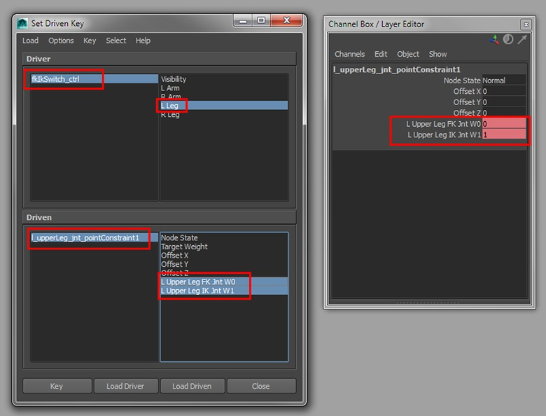

Introduction to rigging in Maya - Part 6 - Rigging the legs

Tutorial assets
Click here to download assets to accompany this tutorial
Previous chapters
Maya rigging: Introduction to rigging
Maya rigging: Introduction to rigging a human torso
Maya rigging: Introduction to rigging the neck and the head
Maya rigging: Introduction to rigging the shoulder and the arms
Introduction
In this tutorial, we will start to create the rig for the legs. The process will be very similar to that of the arms. We'll make sure the animator can switch between FK and IK mode and add extra joints to reduce any candy wrapper effects when twisting.
The creation of the leg chain will be approached in a slightly less conventional method than you've probably seen in the past, but there is a reason for this. Usually, I would create a 5-joint chain (hip, knee, ankle, ball and toe) and then add the controls, IK handles etc to get things moving. What I find, however, is that when I rotate the ankle inwards and outwards (supination and pronation), I need to use more than one axis to keep the foot planted on the ground. This is due to the orientation of the ankle joint aiming towards the ball joint. To combat this, I am going to break the leg down into 2 chains (the leg chain and the foot chain) and then add an extra joint at the ankle that will be orientated to the world. The ankle chain will then be parented to this extra joint and the extra joint will be parented to the end of the leg chain so everything works as normal. By adding an extra joint rather than changing the orientation of the original ankle joint, we can still use the length of the joints to create stretchy limbs if we wish to, as the parent joint will still be aiming towards its child joint.
So, as they would say in theatre, let's break a leg…
Maya rigging – the legs
Creating the leg joints
In the side view, go Skeleton > Joint Tool and create a 3-joint chain going from the hip region, to the knee and then ending at the ankle. Add a slight bend to the knee as this will make it easier for the IK to calculate how the leg should flex. Then in the front view, position the root joint into the left leg geometry. Now, with the root joint selected, go Skeleton > Orient Joint Tool. Set the Primary Axis to Y, the Secondary Axis to X and the Secondary Axis World Orientation to X (+). To get the joint chain to sit into the leg correctly, use a combination of the Joint Orient and the Translate Y (length of the joint) attribute. Rename the joints from root to tip: l_upperLeg_jnt, l_lowerLeg_jnt and l_legEnd_jnt.
Next, we will add the joint that will handle the ankle twisting. In the side view, use the Joint Tool to create a single joint at the point of the ankle. I hold down the V key on the keyboard to activate Snap to Points so it is precisely at the end of the leg chain. Make this single joint larger by increasing the Radius in the Channel Box, and then rename the joint l_ankleTwist_jnt.
A breakdown of the leg joints
Drop back into the side view now so we can create the joints for the foot. Again, use the Joint Tool to create a 3-joint chain, starting at the ankle (hold down the V key once more to snap to the same position), then at the ball of the foot and finally at the end of the toes. I place the joint at the ball of the foot pretty close to the ground as I find that I get a more pleasing result during deformation. I also hold down the Shift key when creating the final joint in the chain as this will create a straight joint. Rename the joints from root to tip: l_ankle_jnt, l_ball_jnt and l_toeEnd_jnt. With l_ankle_jnt selected, go Skeleton > Orient Joint Tool. The settings should be set from beforehand so simply hit Apply.
Now parent l_ankle_jnt under l_ankleTwist_jnt. Then select l_ankleTwist_jnt and use the Joint Orient (using the Y channel) in the Attribute Editor to sit the joint chain in the foot properly. Lastly, parent l_ankleTwist_jnt under l_legEnd_jnt.
The final hierarchy for the leg
Twist joints and low-res mesh
To create the twist joints, we will once again use the Joint Splitter script. First, select l_upperLeg_jnt and hit Ctrl+D to duplicate it. Hide the original joint chain (Ctrl+H) and from the newly created chain, delete the following joints: l_ankleTwist_jnt, l_ankle_jnt, l_ball_jnt and l_toeEnd_jnt. Then rename the remainder of the joints randomly so they do not clash with our original joint chain when we use the script.
In the Script Editor, load the Joint Splitter script into a MEL tab and execute it to bring up the GUI. Select the root joint from our duplicated joint chain and click Select Start Joint on the Joint Splitter tool. Set the Jnt Qty to 3 and hit Split Joints. Then select the lower leg joint and do the same again. We now want to get rid of the unnecessary joints. Start by selecting the end joint of the chain and deleting it. Then select the third joint up from the end of the joint chain and un-parent it (Shift+P). We should now have 2 independent joint chains. For the upper leg joint chain, select the end joint and delete it. Then select the second joint in the joint chain and hit Shift+P to un-parent it. You should have a single joint left over which you can select and delete.
Using the Joint Splitter tool to do exactly that, split the joints
Select all the remaining joints now and hit Shift+P so they are all independent. Rename them from top to bottom as follows: l_upperLegTwistA_jnt, l_upperLegTwistB_jnt, l_upperLegTwistC_jnt, l_lowerLegTwistA_jnt, l_lowerLegTwistB_jnt and l_lowerLegTwistC_jnt. Now select the upper leg twist joints and parent them under l_upperLeg_jnt. Then select the lower leg twist joints and parent them under l_lowerLeg_jnt.
The next thing to do is to chop up the geometry and to parent the relevant mesh to the relevant joint. I do this by duplicating the main mesh, deleting all the unnecessary polygons and then using the Mesh > Extract tool to split the mesh up. Once you have all the individual pieces, select them all and go Edit > Delete By Type > History. Finally, parent the relevant part of the geometry to the relevant joint. Remember to rename the geometry appropriately also.
The twist joints parented under the relevant joint
Adding the IK and FK joints and creating the FK controls
Select l_upperLeg_jnt and hit Ctrl+D to duplicate it. Open up the hierarchy for the newly created joint chain in the Outliner and delete all the twist joints and the geometry that has come along for the ride. Now select the root joint for the new chain and go Modify > Search and Replace Names. When the window pops up, type _jnt in the Search for space, and _FK_jnt in the Replace with space. Then take the 1 off the end of l_upperLeg_FK_jnt. Now duplicate l_upperLeg_FK_jnt and use the Search and Replace Names tool to rename _FK_jnt to _IK_jnt.

Duplicating the original leg chain to create the FK and IK set
Hide the original joint chain and the IK joint chain for now so we can create the FK controls. Open up the Script Editor and load the createControls.py script into a Python tab. Select l_upperLeg_FK_jnt, l_lowerLeg_FK_jnt, l_ankleTwist_FK_jnt, l_ball_FK_jnt and then execute the script. Now to correct the control hierarchy. First parent l_ball_FK_ctrl_offset under l_ankleTwist_FK_ctrl. Then parent l_ankleTwist_FK_ctrl_offset under l_lowerLeg_FK_ctrl_offset. Next parent l_lowerLeg_FK__ctrl_offset under l_upperLeg_FK_ctrl. Lastly, parent l_upperLeg_FK_ctrl_offset under hip_FK_ctrl. If needed, reshape the controls to make them more easily selectable. Remember to do this in component mode by hitting F8.
Creating the FK controls using the createControls.py script
IK leg controls part 1
Hide the FK joint chain and the controls for now and then un-hide the IK joint chain by selecting it in the Outliner and hitting Shift+H. Let's now add the IK handles that will drive the leg and the foot. Go Skeleton > IK Handle Tool (Options) and set the Current solver to Rotate-Plane Solver. Then in the Outliner, click l_upperLeg_IK_jnt and then l_legEnd_IK_jnt. Rename the newly created IK handle to l_leg_IK. Now go Skeleton > IK Handle Tool (Options) and set the Current solver to Single-Chain Solver. Then in the Outliner, click on l_ankleTwist_IK_jnt first and then l_ball_IK_jnt. In the video, I first create the IK handle between l_ankle_IK_jnt and l_ball_IK_jnt, but do correct this later on. Rename this IK handle to l_ball_IK. Then create another Single-Chain IK between l_ball_IK_jnt and l_toeEnd_IK_jnt rename it l_toe_IK.
To create the control for the IK leg, select l_arm_IK_ctrl_offset and duplicate it (Ctrl+D). Then un-parent it by hitting Shift+P. Use the Search and Replace Names tool to Search for _arm and Replace with _leg. Also get rid of the 1 on the end of the offset node. To position the control correctly, parent l_leg_IK_ctrl_offset under l_leg_IK and then zero out the translate values in the Channel Box. Once in place, with l_leg_IK_ctrl_offset still selected, hit Shift+P to un-parent it from l_leg_IK. Now parent all three IK handles under l_leg_IK_ctrl. Lastly, with l_leg_IK_ctrl selected, in the Channel Box, go Edit > Edit Attribute and rename elbowTwist to kneeTwist and armTwist to legTwist.
The IK leg control in place and the IK handles parented below
IK leg controls part 2
Now we need to add an extra IK leg chain to allow for the twist of the lower leg, just like we have done for the IK arm. Start by selecting l_upperLeg_IK_jnt and hitting Ctrl+D to duplicate it. Select the root joint for the duplicated joint chain and go Modify > Search and Replace Names. Set Search for to _IK and Replace with to Drive_IK. Once again, remove the 1 at the end of the root joint.
Now to constrain the original IK joint chain to the driver set. First, select in this order, l_upperLegDrive_IK_jnt, l_upperLeg_IK_jnt and go Constrain > Orient (Options). Make sure the Constraint axes is set to All and hit Apply. Now, select in this order, l_lowerLegDrive_IK_jnt, l_lowerLeg_IK_jnt and go Constrain > Orient (Options). This time, set the Constraint axes to X and Z only. Then select, in this order, l_ankleTwistDrive_IK_jnt, l_ankleTwist_IK_jnt and go Constrain > Orient (Options). Turn All back on for Constraint axes and hit apply. Lastly, select in this order, l_ballDrive_IK_jnt, l_ball_IK_jnt and go Constrain > Orient, keeping the settings the same.
Now, select the lower leg joint for each leg, and one at a time, set the Rotate Order to YZX in the Attribute Editor.
Constraining the original IK leg chain to a driver set of joints and making sure not to constrain the rotate Y attribute on the lower leg
FK IK switching
Now we will create the constraints to drive the main leg chain with either the FK or the IK leg chain. Select, in this order, l_upperLeg_FK_jnt, l_upperLeg_IK_jnt, l_upperLeg_jnt and go Constrain > Orient (Options). Make sure Constrain axes is set to All and hit Apply. Then select, in this order l_lowerLeg_FK_jnt, l_ lowerLeg _IK_jnt, l_ lowerLeg _jnt and go Constrain > Orient. In this order, select l_ankleTwist_FK_jnt, l_ankleTwist_IK_jnt, l_ankleTwist_jnt and again, apply the orient constraint. Lastly, select in this order l_ball_FK_jnt, l_ball_IK_jnt, l_ball_jnt AND GO Constrain > Orient.
Now that the original leg chain is following both the FK and IK joints, let's use SDKs to go between the 2 modes. Select the 4 orientConstraint nodes that we just created (you will find them under l_upperLeg_jnt, l_lowerLeg_jnt, l_ankleTwist_jnt and l_ball_jnt) and go Animate > Set Driven Key > Set. This should load the constraint nodes into the Driven window. Now select the fkIkSwitch_ctrl and hit Load Driver. Set the L Leg attribute to 0 (FK mode) on the fkIkSwitch. Then select the l_upperLeg_jnt_OrientConstraint1 node in the Driven portion of the SDK window. In the Channel Box, set L upper Leg FK Jnt W0 to 1 and L upper Leg IK Jnt W1 to 0. Do the same for the remaining 3 constraint nodes. Once all the FK W0 have been set to 1 and the IK W1 nodes have been set to 0, highlight L Leg in the top-right window of the SDK tool and highlight the weight attributes on the bottom-left window of the SDK tool. Then, hit Key on the SDK window. Now, simply set the L Leg attribute to 1 on the fkIkSwitch_ctrl, set all the W0 to 0 and the W1 to 1 on all the constraint nodes and hit Key once more.
Setting up the FK IK switching using the Set Driven Key tool
Attaching the leg to the hip
Rather than parenting the leg chains directly under the hip joint, I want to keep them separate. That way, should I need to re-work any part of the rig, I can do so without disturbing other regions. So we are going to stick with using constraints to bring everything together. Select in this order, l_upperLeg_FK_jnt, l_upperLeg_IK_jnt, l_upperLeg_jnt and go Constrain > Point. Now select the newly created pointConstraint node (this will live under l_upperLeg_jnt) and go Animate > Set Driven Key > Set to load into the Driven portion of the SDK tool. Select fkIkSwitch_ctrl and click Load Driver. Set the L Leg attribute on the fkIkSwitch_ctrl to 0 (FK mode), the L Upper Leg FK jnt W0 to 1 and L Upper Leg IK jnt W0 to 0 on the pointConstraint node. In the SDK tool, highlight L _Leg on the top-right window and both weight attributes on the bottom-right window. Then hit Key on the SDK tool. Then set the value to 1 for the L Leg attribute on the fkIkStwitch_ctrl and reverse the weight values on the pointConstraint node. Hit Key once more on the SDK tool.
Using the Set Driven Key tool to control the pointConstraint node
Now, select in this order, l_upperLegDrive_IK_jnt, l_upperLeg_IK_jnt and go Constrain > Point. We now need a control that will be used to attach the IK leg to the hip. Select l_elbow_ctrl_offset, hit Ctrl+D to duplicate it and then Shift+P to un-parent it from its current location. Use the Search and Replace Names tool to rename _elbow to _hip_IK. Select l_hip_IK_ctrl_offset and parent it under l_upperLeg_IK_jnt. Zero out the translate and rotate values in the Channel Box for l_hip_IK_ctrl_offset and then un-parent it (Shift+P). In component mode (F8), edit its shape and position to make it more easily selectable. Now, in this order, select l_hip_IK_ctrl, l_upperLegDrive_IK_jnt and go Constrain > Point. Then, simply select l_hip_IK_ctrl_offset and parent it under hip_FK_ctrl. You can hide l_hip_IK_ctrl if you wish.
Let's take care of the FK leg next. Select in this order, l_upperLeg_FK_ctrl, l_upperLeg_FK_jnt and go Constrain > Point. Job done.
The addition of the l_hip_IK_ctrl; used to attach the IK leg to the hip control
Adding the twist joint
To create the twisting of the leg, we will create the same expression as we did for the arm. Open up the Expression Editor by going Windows > Animation Editors and create the following expression:
l_upperLegTwistA_jnt.rotateY = l_lowerLeg_jnt.rotateY * .25;
l_upperLegTwistB_jnt.rotateY = l_lowerLeg_jnt.rotateY * . 5;
l_upperLegTwistC_jnt.rotateY = l_lowerLeg_jnt.rotateY * .75;
l_lowerLegTwistA_jnt.rotateY = l_ankleTwist_jnt.rotateY * .25 * -1;
l_lowerLegTwistB_jnt.rotateY = l_ankleTwist_jnt.rotateY * . 5 * -1;
l_lowerLegTwistC_jnt.rotateY = l_ankleTwist_jnt.rotateY * .75 * -1;
Hit Create and then rename the expression l_legTwist_expr. The * -1 will make sure that the twisting of the lower leg does not go in the wrong direction. Select the l_lowerLeg_FK_ctrl and set the Rotate Order to YZX to reduce any funny business as we twist the lower leg. Let's now hook the knee twist up for the IK control. Open up the Connection Editor (Window > General Editor > Connection Editor) and load the l_leg_IK_ctrl into the left-hand side. Now load l_lowerLeg_IK_jnt into the right-hand side and connect kneeTwist (left-hand side) to rotateY (right-hand side).
Using the Expression Editor to drive the leg twist joints
Cleaning up the leg rig
A bit of housework now. Select all the joint chains for the legs and l_leg_IK_ctrl_offset. Hit Ctrl+G to group them together and then rename this group l_leg_rig_grp. Open up l_leg_rig_grp, select all the joint chains in there and hit Ctrl+G to group them. Rename that group l_leg_jnt_grp. The last thing to do is color code the controls using the Drawing Overrides. All you need to do now is mirror the joints over and create the rig for the right-hand side.
Happy rigging.
Both legs in place and the Outliner cleaned up